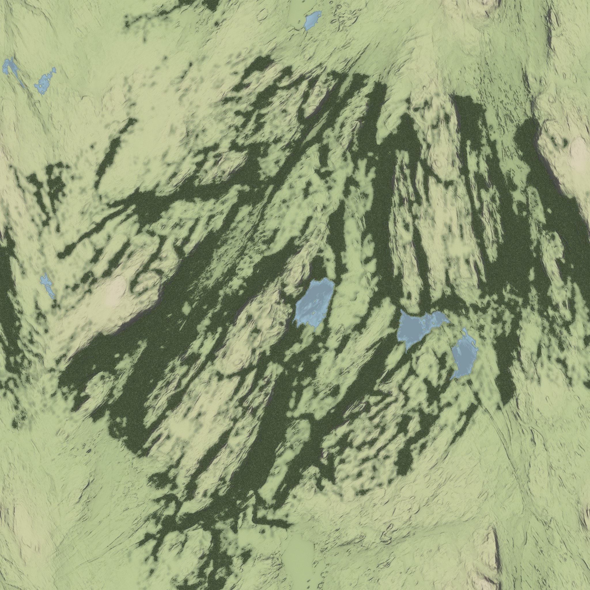
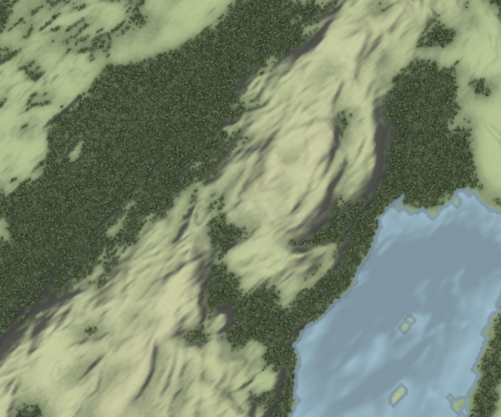
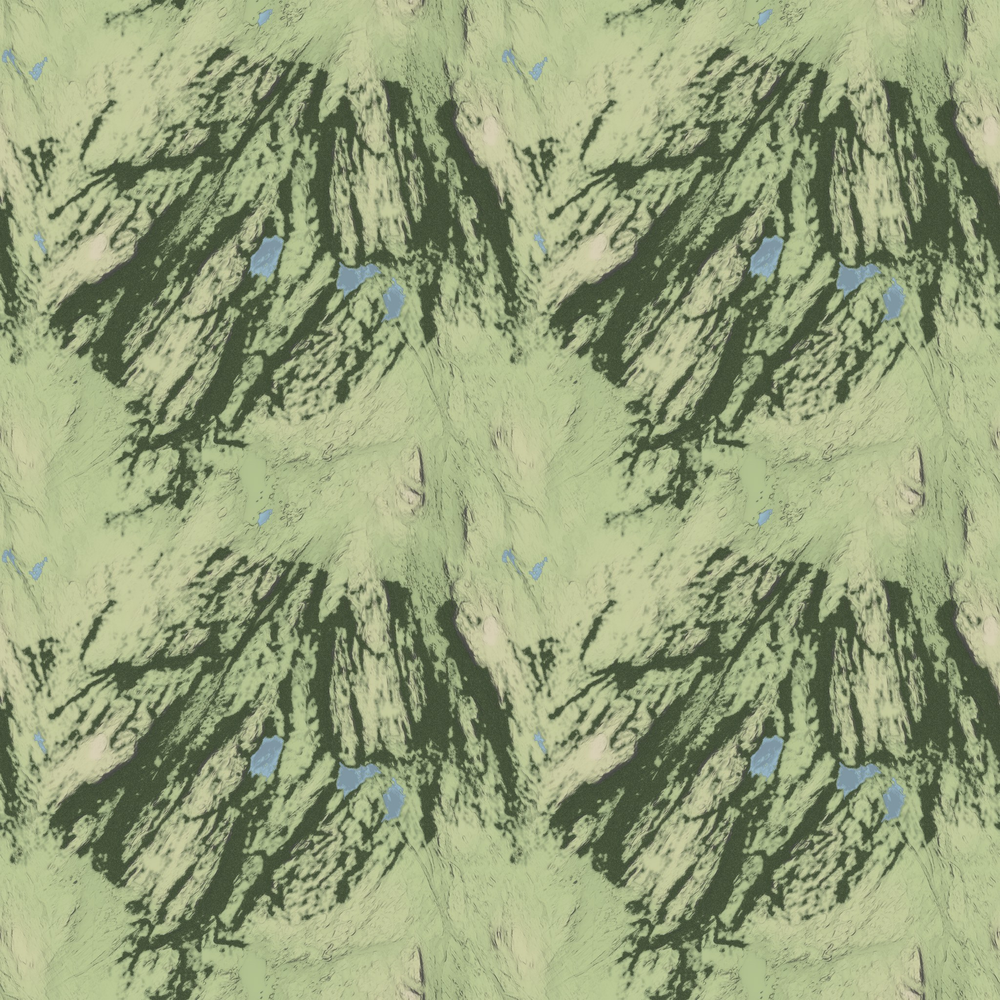
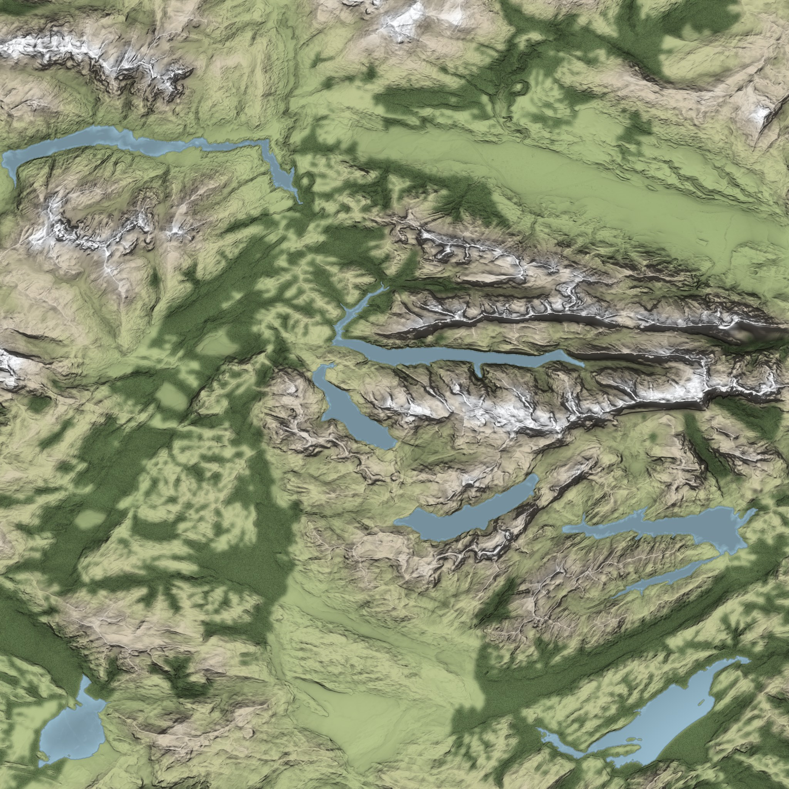
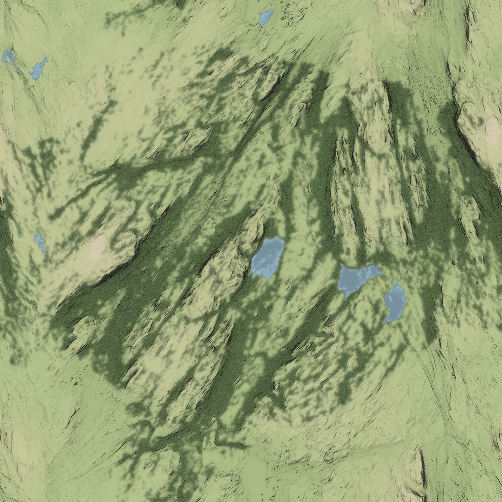
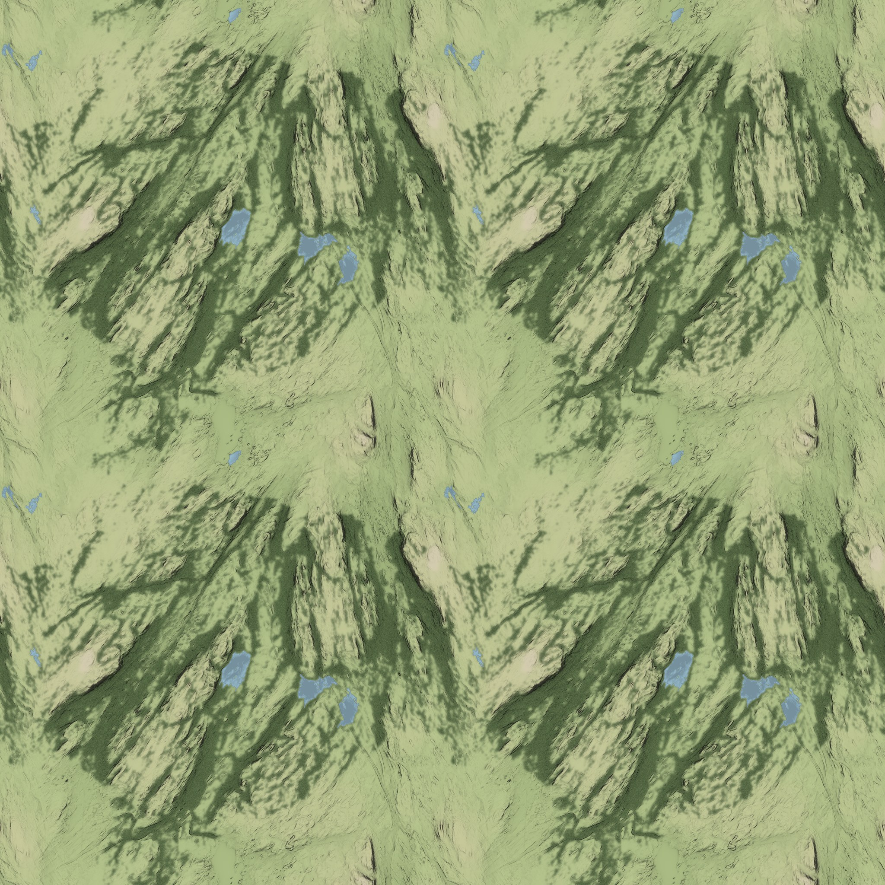
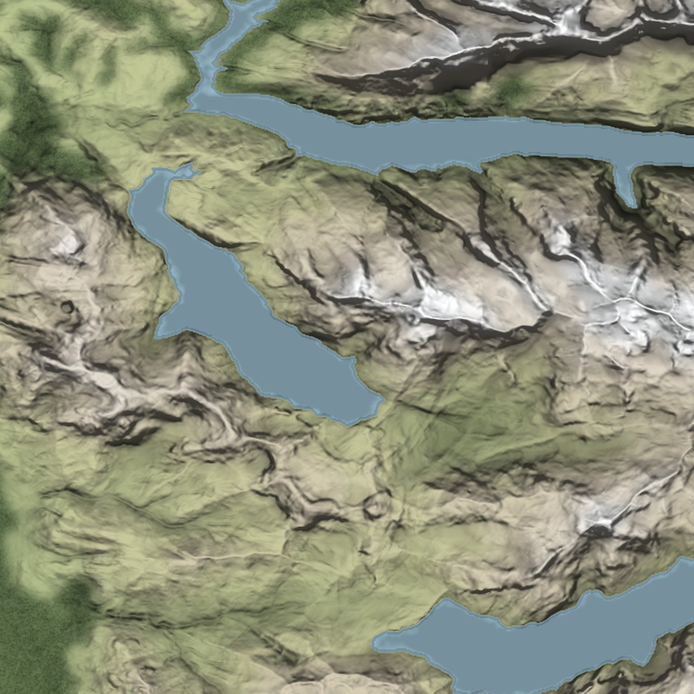
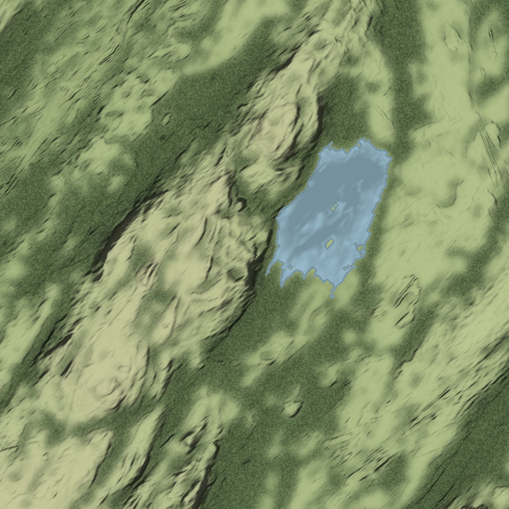

True 90° overhead, natural colours, direction-free (omnidirectional + sky-view) shading, low relief, lakes only, no rivers, no labels. 4096 × 4096 px. Click to open, scroll to zoom, drag to pan.







